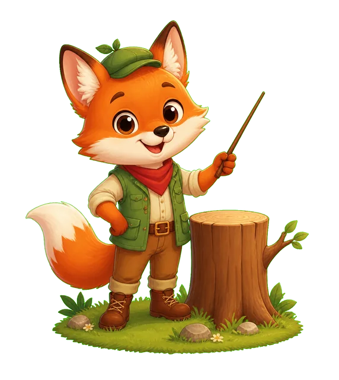

⛶
音

九九乘法闖關王
3 分鐘衝 100 分，一關一關變高手！
依年級：
全部
小一二
小三四
小五六
國一
國二
國三
×
乘法森林
九九冒險
+ −
加減村莊
心算任務
÷
除法山谷
小三挑戰
±×÷
全能綜合
四則挑戰
進
進階挑戰
三~六年級
½
分數樂園
四~六年級
形
圖形計算
三~六年級
x
國一代數
七年級
x²
國二代數
八年級
九
國三進階
九年級
ABC
英文單字
小一~六
自
自然科學
三~六年級
社
社會
三~六年級
選擇關卡
怎麼玩？
複習錯題
學習進度
重設所有進度
小提示：連續答對會有 combo 加分，又快又準分數更高！
←
關卡
音
0 分
3:00
目標 100
🦊
—
★
過關！
★★★
得分
100
答對
0
最佳連續
0
下一局會自動多練需要加強的題目。
下一關 ›
再玩一次
回首頁
3
怎麼玩
每一關有
3 分鐘
，目標是衝到
100 分
過關。
題目會出現，從 4 個答案中點出正確的。
答對 +5 分；
4 秒內答對 +10 分
（又快又準最強！）。
答錯不扣分，但會告訴你正確答案。
連續答對會累積
combo
，越多越威風。
過關才能解鎖下一關，星星越多代表越厲害。
最後一關「倒背高手」是看答案猜算式，練到倒背如流！
開始挑戰！
學習進度
關閉